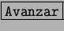
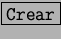

Como dice el refrán, más vale una imagen que mil palabras. Por eso la StarCalc provee una serie de herramientas que permiten convertir los datos en gráficos para una mejor comprensión.
Creación de un nuevo gráfico. Lo primero es seleccionar los datos que se desean representar para luego ir a [Diagrama] en el menú [Insertar]. Se nos mostrará un cuadro pidiendo los datos, estos serán los que hemos seleccionado o cualquier rango que podemos ingresar manualmente. En este punto podremos seleccionar si queremos nuestro gráfico en la misma hoja o en una nueva hoja. Presionaremos  y se nos mostrará el cuadro de diálogo para seleccionar el tipo de gráfico que vamos a utilizar.
Una vez seleccionado el tipo de gráfico y la variante que vayamos a utilizar, se nos presenta un cuadro en el que podremos introducir los títulos que van a acompañar el gráfico.
Tras lo cual seleccionaremos  y se nos presentará el gráfico dentro de la hoja activa, o en una hoja nueva si es lo que hemos seleccionado previamente. Podremos trabajar directamente sobre el gráfico utilizando el botón derecho del ratón o el menú de formato que nos permitirá personalizar el gráfico.
Personalización de gráficos. Presionando con el botón derecho elegiremos la opción del menú [Editar]. De esta manera activaremos el gráfico y podremos utilizar las funciones de personalización sobre aquellas zonas del gráfico que deseemos cambiar. Para ello seleccionaremos la parte del gráfico a cambiar y seleccionaremos la opción [Propiedades del Objeto] que se nos muestra con el botón derecho del ratón o dentro del menú [Formato]. Ha de hacerce notar que se pueden utilizar la hilera de botones verticales que se encuentran en la parte izquierda de la pantalla y que nos permiten acceder a opciones del gráfico de forma más rápida.
5.36